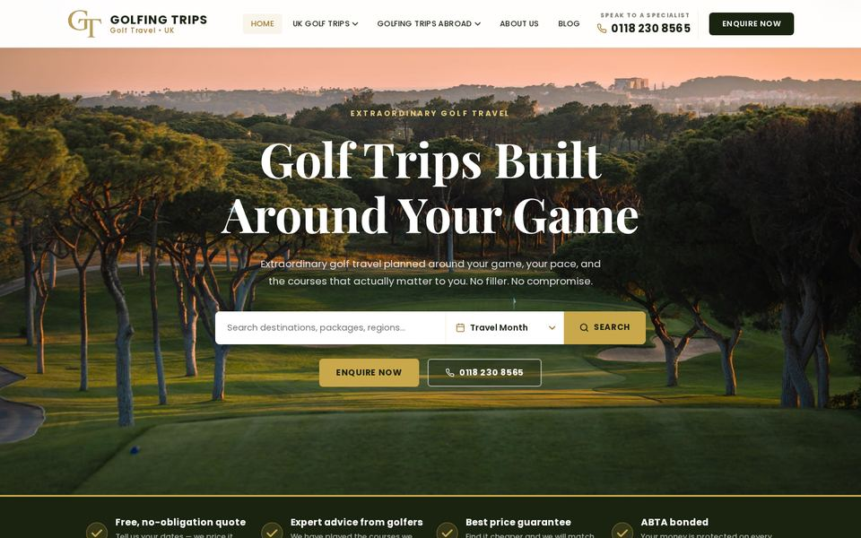
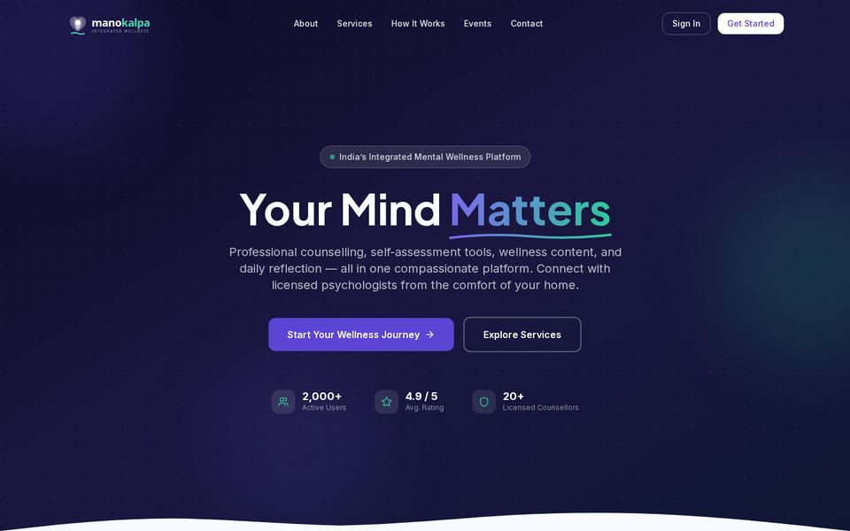

AI agents & LLM apps
Chatbots and assistants that know your data, agents that run multi-step workflows, self-hosted models when privacy matters.
Hi, I'm Lokesh. Hire me to take your idea from prototype to something real users rely on — AI agents, computer vision, ROS 2 robots, ESP32 devices, or a web app with the CRM and admin panel behind it.
Replies within a day · Clients in the UK & India
One person from idea to deployment — hardware, AI and the software people actually use. Pick one, or combine them.
Chatbots and assistants that know your data, agents that run multi-step workflows, self-hosted models when privacy matters.
Object detection and tracking, models optimised to run on edge devices, and real-time voice pipelines (speech in, speech out).
Navigation, mapping and motion control for wheeled, legged and arm robots — validated in simulation before it touches hardware.
ESP32 firmware integration, device-to-cloud backends and dashboards, and AI that runs on the device itself.
Fast, SEO-ready websites and web apps — plus the back office: CRM, enquiry pipelines, admin dashboards and APIs.
For students and engineers: planning, building and debugging your IoT or robotics project — from the parts list to a working demo.
Two full stack platforms designed, built and deployed end to end — front of house and back office. Both are live; click through and try them.

Full stack Next.js luxury golf travel platform for a UK ABTA-member tour operator: packages and deals across 10+ destinations, month-based trip search, a blog and SEO structured data, deployed on Vercel.
Behind it, the back office: a CRM for leads, enquiries and quotes, and an admin panel where the team manages packages, destinations, deals and content without touching code.

Full stack Next.js mental wellness platform for a Bengaluru counselling startup: registration with invite-based onboarding, counselling booking across service types, self-assessments, a journal, content and events hubs, and an AI wellness companion.
Alongside client products, I help students and working engineers get their IoT and robotics projects built and working — choosing the right hardware, wiring and firmware, ROS 2 and simulation, adding vision or AI, and getting to a demo that holds up in a review or an interview.
Get help with your project ↗Clear scope, small milestones, no disappearing for weeks.
Tell me what you're building and who it's for. I'll ask the awkward questions early.
A written plan: scope, milestones, timeline and a quote. You know what you're getting before work starts.
Regular async updates and demos you can click, so you can steer as it takes shape.
Deployed, documented and walked through — code, access and docs handed over cleanly.
Six systems across agents, perception, robotics, edge and privacy-preserving ML — from my day job, research and independent work.
A platform where in-house and third-party AI agents interoperate to run business workflows, with a governance layer for centralised authorisation, control and monitoring. Led the development of several in-house agents and third-party integrations.
The service layer behind human–robot interaction for 80+ concurrent robots on a single GPU server: a streaming VAD → ASR → LLM → TTS voice pipeline at ~60 ms response latency, plus self-hosted open-weight LLMs with RAG.
MATLAB and Python locomotion simulations for biped and quadruped platforms covering walk sequences and control algorithms — every robot validated in simulation before the hardware build, then carried through to physical controllers.
Led a 3-person team building the cloud backend for a consumer home robotics product based on the ESP32-P4, including ESP-IDF firmware integration between device and cloud.
LSTM-based object detection and action recognition on aerial footage, reaching 83% accuracy, with path mapping for autonomous delivery and emergency-response drones and a full data and image-processing pipeline.
Federated training that lets organisations train shared models on decentralised data. Differential privacy and homomorphic encryption protect client updates; a permissioned blockchain makes aggregation auditable.
I'm an AI Engineer at Sirena Technologies in Bengaluru, working on both sides of physical AI: the robots, and the agent systems that direct them. My work spans multi-agent LLM platforms, voice and vision pipelines, edge inference on NVIDIA Jetson, and ROS 2 navigation for service and legged robots.
I've been freelancing since 2024, shipping production web and AI applications for clients in the UK and India. That day job is why clients hire me: the same engineering that runs 80+ robots goes into their product. I own a project end to end — scoping, clear milestones, async updates and a clean handover.
And I'm building ANVE, an AI-native company that runs as an ecosystem of four: Studio, Labs, Wear and Human Agentic.
ANVE is an AI-native company I'm building that makes companies intelligent by design. Four companies share one engineering and design language. This portfolio uses it too.
Robots, the cloud behind them, and products for clients.
GITAM (Deemed to be University), Bengaluru
Anything else, just message me — hi.lokeshrm@gmail.com or lokeshrm.work@gmail.com.
AI agents and LLM apps, computer vision and voice, ROS 2 robotics, IoT and edge devices, and full stack web apps including CRM and admin panels — from a single feature to a full product. I also help students and engineers build IoT and robotics projects.
Yes. I've delivered for clients in the UK and India, fully remote, with async updates and calls scheduled to overlap with your working hours.
Usually within a day (IST). Email or WhatsApp both work.
A short call to understand what you're building, then a written plan with scope, milestones and a quote. Work starts once the first milestone is agreed.
Yes — send me the repo or a description of what exists and what you need. I'll tell you honestly whether it's better to extend it or rebuild part of it.
A clean handover: the source code, deployment, documentation and a walkthrough so you or your team can run it.
Tell me what you're building, who it's for and when you need it. I usually reply within a day (IST) and I'm happy to start with a short call and a clear plan for the first milestone.
hi.lokeshrm@gmail.com